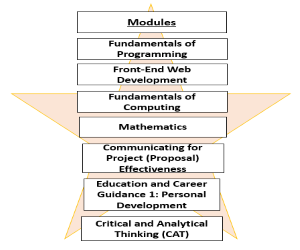
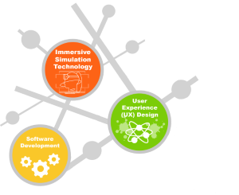

Experience In SP
There were some reasons why I choose SP. Firstly, SP is located right outside Dover MRT station, so getting to school is much more convenient for me. Secondly, be it work or studies my options will be unlimited upon graduate. Lastly, I am passionate to make new friends in SP, I have heard from my brother which is an ex-sp student, that in SP everyone is friendly and approachable.
Currently, I am studying Information Technology at SP. In this course, I have learned more about programing, Computer math, project communication, and front-end web development which I didn't have a chance to study about them in my previous course in ITE yet.
Through these few weeks in SP, I have made several close friends from my class, everyone is friendly and fun. I have also joined NDP motivator and have made friends from other courses in SP, everyone is so friendly , fun and we are like a family. SP gives me lots of opportunities to have fun and make friends other than studying.
OVERVIEW OF SP DIT SEM 1

Term 1:
Classes: 18 Apr - 3 Jun 2022
Vacation: 7 Jun - 26 Jun 2022
Term 2:
Classes: 27 Jun - 19 Aug 2022
Exams: 22 Aug- 2 Sep 2022
Vacation: 3 Sep - 16 Oct 2022
ACTIVITIES & CCA
I decided to sign up for SP NDP motivator with my friends for this year's National Day Parade. As a NDP motivator, I will be part of Singapore's largesr celebration of the year, my once in an NDP time to dance in front of a large audience, build long-lasting friendships and memories, free NDP tickets, free KFC meals and milo truck.
WHY DID I CHOOSE SP DIT
The reason of why I choose SP DIT is, SP offer a chance for me to choose 5 electives and gain a minor and i trust this will enhance my portfolio forbetter job opportunities. SP DIT also offer Industry Certification curriculum in my year 3 of studies. For example, W3S Certified HTML Developer, OpenJS App Developer (JSNAD), OpenJS Service Developer (JSNSD), etc...
COURSE HIGHLIGHTS

1. INDUSTRY NOW CURRICULUM (INC) Industry Project Learning Approach, Project INC
pathways
2. INDUSTRY CERTIFIED CURRICULUM (IC2)
3. AWESOME OPPORTUNITIES(Work with leading industry companies)
4. GET A HEAD START FOR LOCAL UNIVERSITIES
5. IMMERSIVE EXPERIENCE TECHNOLOGY CENTRE (IXTC)
COURSES OFFERED IN SP SOC

Common ICT Programme
The DCITP is a semester long programme designed to give you a broad introduction to the Infocomm landscape and help you gain insights into the occupations and job roles, career pathways and employment opportunities in the various Infocomm sectors. The DCITP will also help you lay a strong foundation in programming and IT fundamentals.

Applied AI and Analytics
From Siri to Google Home and online chatbots, data analytics and AI make it possible for
devices and programmes to respond to us in an almost human-like manner.
Are you interested to develop the next AI application
that benefits our world?
If your answer is yes, the Diploma in Applied AI & Analytics (DAAA) is perfect for you!

Infocomm Security Management
Being a Diploma in Infocomm Security Management (DISM) student gives you the competitive edge for a boost in your future studies and career. You can look forward to an interesting curriculum that covers offensive attacks, defensive methods and investigative skills.

Information Technology
The Diploma in Information Technology (DIT) course is positioned to focus on Software & Applications development three specialist tracks: Software Development , User Experience (UX) and Immersive Simulation